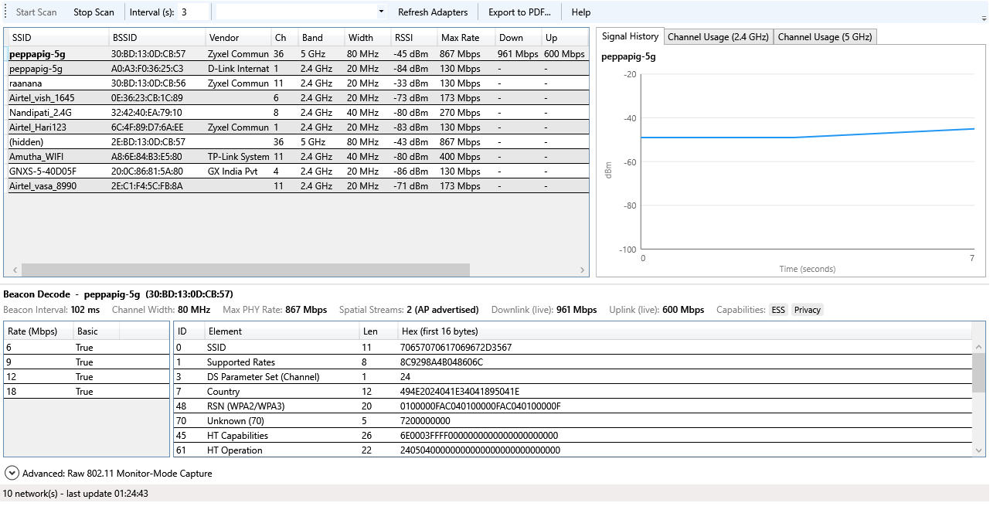
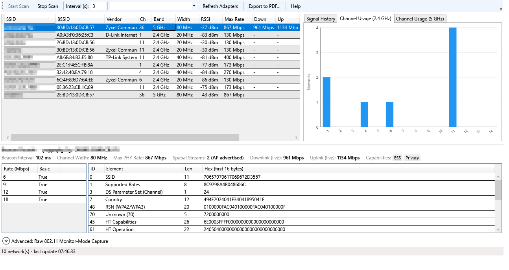
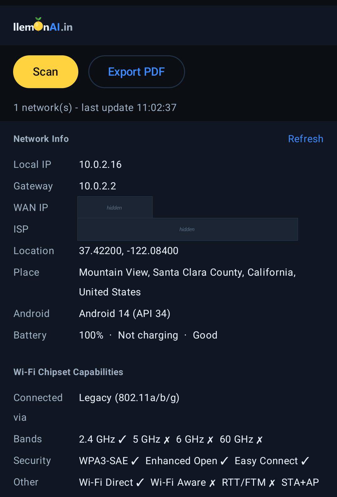
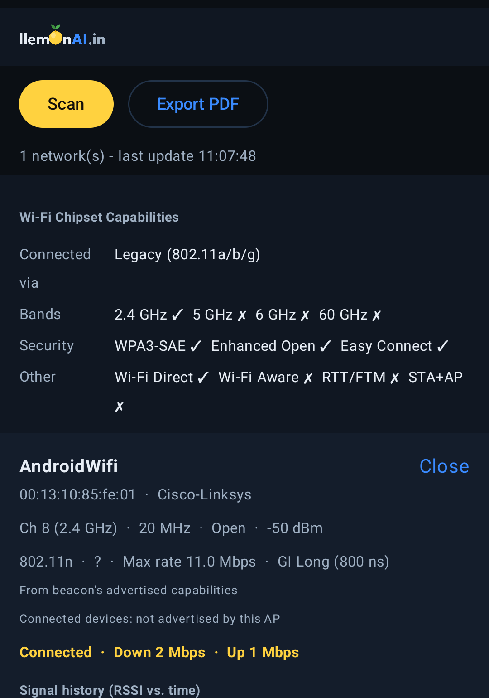
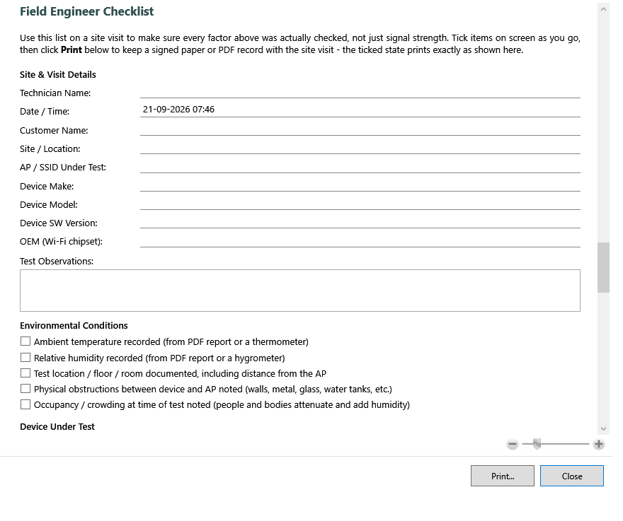

A free Wi-Fi scanning and diagnostics tool for Windows and Android. Discover nearby networks, decode raw beacon frames, track signal history, and generate field-ready PDF reports — built for IT engineers and field technicians.
Everything a field engineer needs to explain "why is this Wi-Fi bad" with evidence, not guesswork.
SSID, BSSID, vendor, channel, band, width, RSSI, PHY type, security, and more — refreshed on an adjustable interval.
Full information-element table per access point — ID, length, raw hex, and human-readable decoding of HT/VHT capabilities, RSN cipher/AKM suites, and more.
RSSI-vs-time tracking per access point, plus 2.4GHz/5GHz channel occupancy charts to spot congestion and overlap at a glance.
One-click report with a network summary, per-AP detail pages, decoded beacon tables, host diagnostics, location, ISP, and (Windows) live weather — ready to attach to a ticket. Available on both Windows and Android.
Local IP, gateway, WAN (public) IP, ISP, and GPS location — live, with a Refresh button, on both Windows and Android. Android adds a reverse-geocoded place name too.
See which Wi-Fi bands and standards your phone's own radio supports — 2.4/5/6/60GHz, WPA3-SAE, Wi-Fi Direct/Aware, and more — plus a real connected-device count per access point where the AP advertises it.
Built-in printable/exportable troubleshooting checklist on both platforms — technician, customer and device details, environmental conditions, RF checks, and throughput verification steps.
Windows: a single self-contained .exe, no installer or admin rights needed — run it from a USB stick. Android: a single sideloaded .apk, no Play Store account needed.
Live network scan with signal history and full beacon decode, plus per-band channel occupancy — on Windows.


...and on Android — same scan/history/channel/checklist views, plus its own Network Info and Wi-Fi Chipset Capabilities cards.


A built-in, printable/exportable checklist — on both Windows and Android — so a site visit covers every factor that affects Wi-Fi performance, not just signal strength. Fill it in on screen, tick items as you verify them, then print (Windows) or share as PDF (Android) a signed record for the ticket.

Windows or Android — pick the build that matches your device. Not sure which Windows build? Almost every PC made since 2010 is 64-bit — use the 64-bit build unless you know otherwise.
Verify your download hasn't been tampered with or corrupted: after downloading, run certutil -hashfile LlemonScanner-15.B2-win-x64.exe SHA256 (PowerShell/Command Prompt) and compare the result to the SHA256 value shown above for the file you downloaded.
All builds are digitally signed (self-signed certificates, SHA256). Windows SmartScreen may still show an "Unknown Publisher" warning, and Android may warn about installing from an unknown source, on first run — that's expected since neither is signed by a publicly trusted CA or listed on the Play Store yet. The signature and the SHA256 checksum above both let you confirm each file matches exactly what we published and hasn't been altered in transit.
Installing the Android APK: Android will block it by default as an "unknown source." Open the downloaded file, tap through the "Install anyway" / "allow this source" prompt, then Install. This is normal for any app installed outside the Play Store, not a sign of a problem with this app specifically.
Wi-Fi coverage isn't just "signal bars." llemonai WiFi Scanner surfaces the environmental and technical factors that actually determine performance.
| Factor | Why it matters |
|---|---|
| Temperature & humidity | Affects RF propagation and can stress AP/client hardware in enclosed spaces. |
| Device load & connected clients | More clients on a channel means more contention and lower effective throughput per device. |
| Interference | Overlapping channels and non-Wi-Fi RF noise directly reduce usable capacity. |
| Positioning & obstructions | Distance, walls, and line-of-sight change signal strength far more than most people expect. |
| Uplink throughput | A great Wi-Fi signal can't outrun a slow upstream connection — both need to be checked together. |